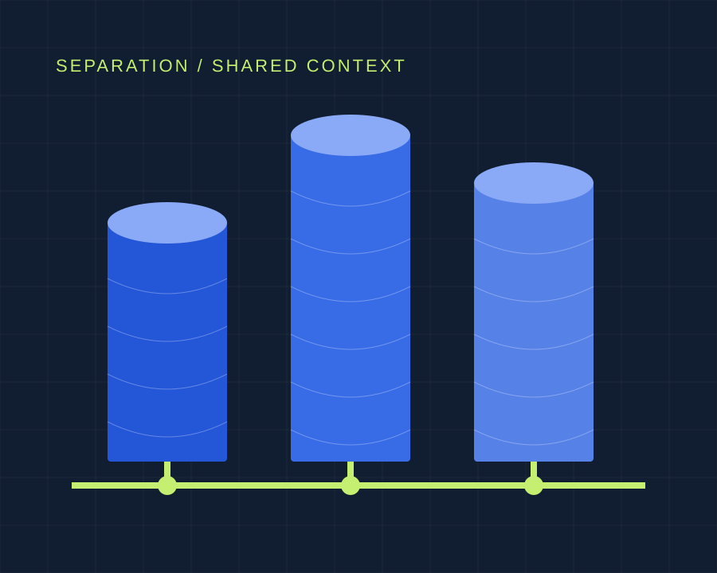

Featured analysis · Strategy & Positioning
What “Silo” gets right about your security stack, and your marketing org.
Separation can protect a system. What happens when it also prevents people from seeing the whole picture?
Read the analysis ↗